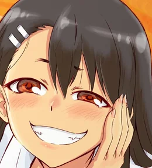

Seus bônus ativos
| Talento | Nível | O que faz |
|---|
Nenhum talento confirmado ainda.
Só aqui no site, e chega no jogo sozinho
Cada nível de habilidade no Minecraft vira ponto de talento. Gaste aqui para liberar o VeinMiner, o Tree Capitator e a colheita em área, e para ganhar bônus que fazem cada minuto de jogo render mais. Ponto só vem de jogar: nada se compra.

Sem login dá para olhar a árvore inteira; para escolher, o site precisa saber quem é você.
Os pontos vêm dos níveis das habilidades no jogo. No servidor, abra o menu e use Vincular conta; depois de jogar um pouco, seus pontos aparecem aqui.
– ganhos · – gastos
temdá para pegarfalta pré-requisitoescolhido agora (falta confirmar)
| Talento | Nível | O que faz |
|---|
Nenhum talento confirmado ainda.
| Nível | Pontos de habilidade | Talento |
|---|
Cada habilidade (Mineração, Lenhador, Fazendeiro, Combate e PvP) sobe sozinha fazendo a atividade no jogo. Vale o maior nível que você já alcançou: morrer não tira talento.
Devolve todos os pontos para você escolher de novo. Grátis, uma vez a cada 7 dias.